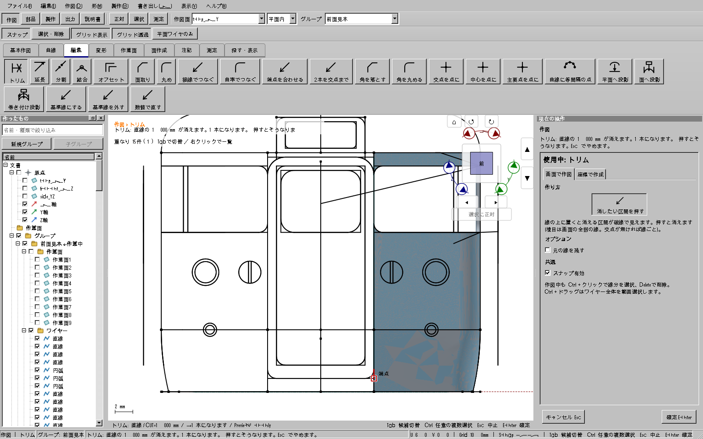
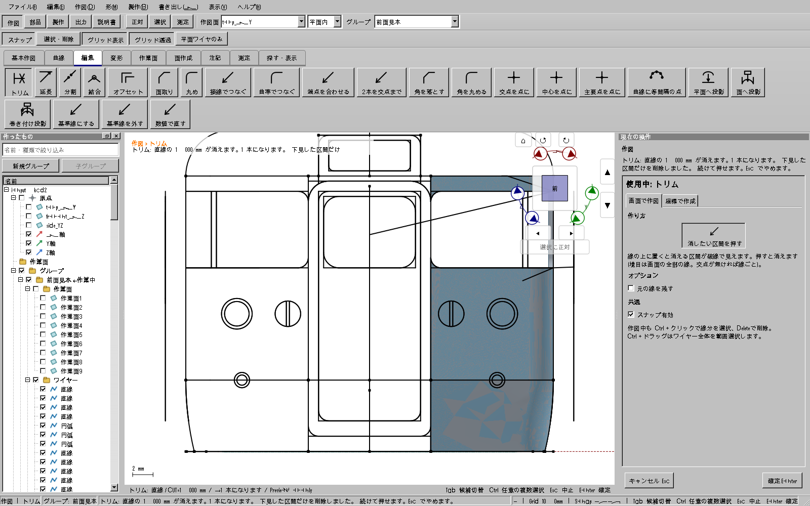

2026-10-29。添付の115投影モデルで、トリムの赤い下見は1 mmなのに周囲のRまで消える問題を修正した。 「元の線を残す」は既定オフのまま、残る形状へ直接反映する。変更前の線を非表示にして追加する処理には戻さない。
修正版を公開済み。重点42件、Windows全195 CTest（skip 0）、開発版・配布版UI各647件、旧CAD自己試験、公開したコピーの通常起動2条件が成功。
| 変える対象 | 維持する対象 |
|---|---|
| 赤い下見で示す削除区間。添付例では扉右下のはみ出し1 mm。 | 他の直線、完成済みのR・曲線、窓輪郭、面・立体、グループ、未編集線分のIDと寸法参照。 |
| 線が2本に分かれる場合は、残す鎖をそれぞれ保存する。 | 未編集の線分IDは正しい結果へ引き継ぐ。形を変えた線分へ無関係な旧IDを移さない。 |


原本をコピーして検証した。形状の準備とファイル読込には文書APIを使用し、下見・候補切替・確定には実Qtビューポートの操作経路を使用した。 画像は実際のアプリが描画した画面。OSマウスで全ツールを手動操作した証拠とは区別する。
| 原因 | 修正後の処理 |
|---|---|
| 部分トリムでも元の作成操作を連鎖削除していた。完成済みのRが過去の元線への履歴参照を持つと、そのRまで削除した。 | 元ワイヤーの形状を局所更新する。線全体を消す場合も、実形状を既に持つ完成済みRの歴史的な入力リンクだけを整理し、Rを残す。 |
| Rの接点や、同一直線上で重なる区間の端を境界として拾えず、添付モデルの下見が6.5 mmになった。 | 実際の3D位置で一致する開曲線の端と、重なり区間の端を境界にする。閉曲線の任意の継ぎ目や、画面上で重なるだけの別平面の線は境界にしない。 |
| 分かれた鎖の未編集線分と寸法参照を失う危険があった。 | 全ての残る鎖で未編集線分IDを引き継ぎ、寸法の参照先を正しいワイヤーへ移す。 |
| 参照面・立体を作り直せない編集が途中で残る危険があった。 | 文書と表示を一緒に戻す。開いた輪郭になるなど再計算できない場合は、理由を表示して変更を取り消す。 |
既存の幾何許容差と保存形式を維持した。共有する複数出力を他へ影響せず編集できない場合は、明示的に断って変更しない。
重点42件が成功。内訳は既存のトリム・削除・区画トリム・Boolean操作と、周囲保全5例、添付モデル1例。 コアのトリム15例も成功。Windows全195 CTest（skip 0）、開発版・配布版UI各647件、旧CAD自己試験、公開コピーの通常起動2条件も成功した。全体検証：2026-10-29 03:33:12〜04:03:19 JST（約30分07秒）。
実モデルを含む重点試験 ／ コア試験 ／ Windows全体の証拠
V2TrimSourcePolicy：保持選択、元ワイヤーの局所更新、全鎖の線分IDと寸法参照、必要な削除確認、文書と表示の取消。V2HoverEditTool / V2MixedTrim：通常と区画トリムの確定へ接続。参照先の形状を再計算。CurveTrim：接点・重複端の実3D境界。公開APIと許容差の変更なし。V2SelfTestTrimPreservation：周囲のR・ID・寸法・失敗時復元・添付モデルの回帰試験を独立したファイルに収めた。実装：687184613、幾何境界：a1e36a2b4、実モデル検証と説明：314a13cca。
検証済み配布：out/releases/trim-preview-final-20261029/package/kachakacha_cad_next.exe。起動・ハッシュの照合記録。